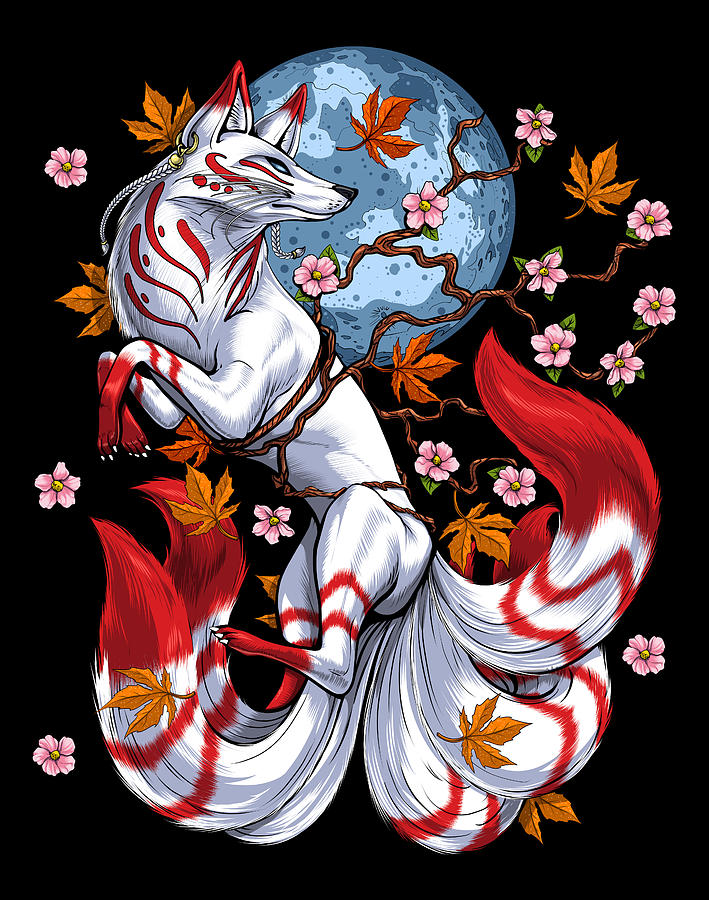

The Enigmatic Nine-Tailed Fox (Kitsune)
The Nine-Tailed Fox, or Kitsune in Japanese, is a mythical creature that has captured the imagination of cultures throughout Asia for centuries. Known for its intelligence, magical abilities, and enchanting presence, the Kitsune plays a prominent role in Japanese folklore, as well as Chinese and Korean traditions. The creature is often depicted as a fox with multiple tails, each tail symbolizing its age, wisdom, and power.

The Origin and Mythology of the Nine-Tailed Fox
The origin of the Kitsune can be traced back to ancient Japanese mythology. The word kitsune is believed to be derived from the Old Japanese word kitsune, which itself comes from the root ki (spirit or deity) and tsune (always or continuous). In these stories, the Kitsune is often portrayed as a messenger of the Shinto deity Inari, the god of rice, fertility, and prosperity. As a guardian of Inari, the Kitsune is revered as a divine being with both protective and transformative powers. In Japanese folklore, it's said that the Kitsune's powers grow with age. A Kitsune can have up to nine tails, and as it gains tails, it becomes wiser, more skilled in magic, and capable of shapeshifting. A nine-tailed fox is considered the most powerful, immortal, and influential.
Physical Appearance and Traits
The Nine-Tailed Fox is typically depicted with a fox-like body but is often much larger and more majestic. Its fur is said to shimmer with a mystical glow, and its eyes are often depicted as shining gold or red, giving it an otherworldly presence. The fox's tails, which are usually the central feature, grow in number as the creature ages, from one tail to a maximum of nine. The more tails it has, the greater its magical abilities. In many depictions, the Kitsune can shift between a fox form and a human form, often as a beautiful woman. This shapeshifting ability is one of the defining traits of the Kitsune, reflecting its dual nature as both a mystical and earthly being.
Kitsune in Japanese Culture
In Japan, the Kitsune holds both revered and feared status. It is celebrated for its intelligence and cunning, often embodying both the protector and the trickster. Many shrines dedicated to Inari have fox statues, symbolizing the deity's divine messengers. However, some versions of Kitsune mythology portray the creature as mischievous or even dangerous, capable of deceiving humans with illusionary tricks or seducing them into romantic relationships.